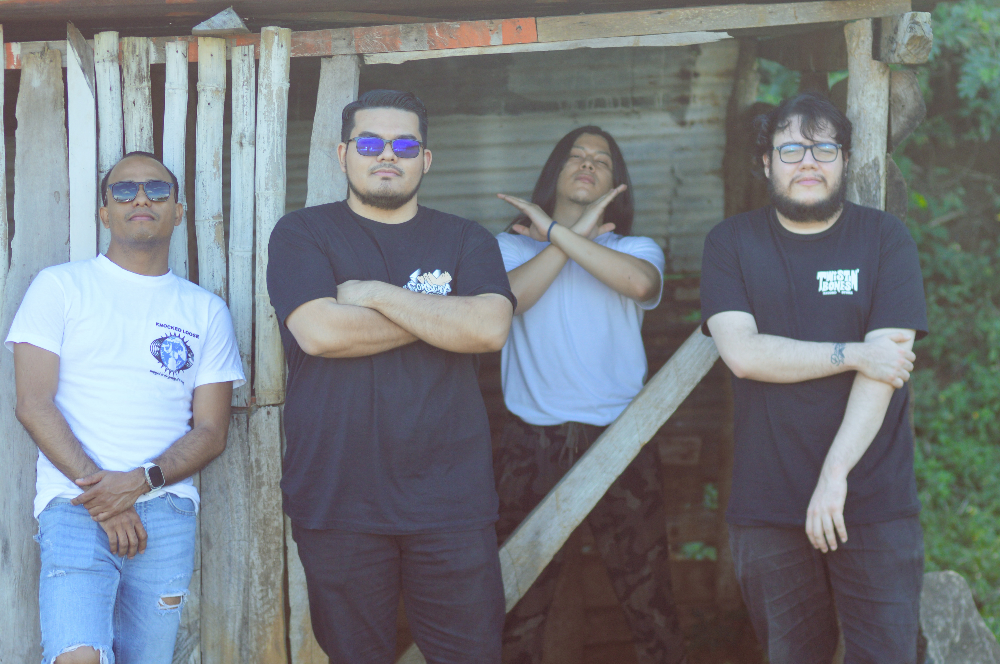
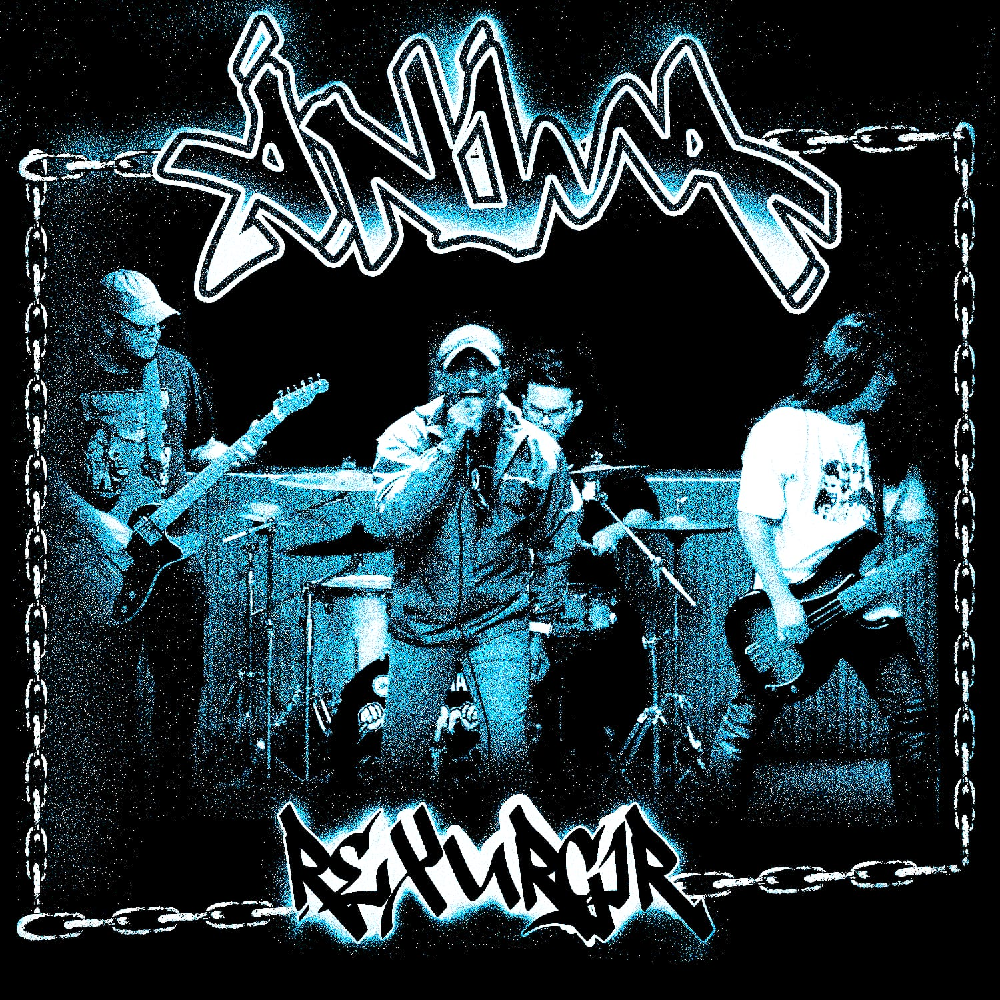
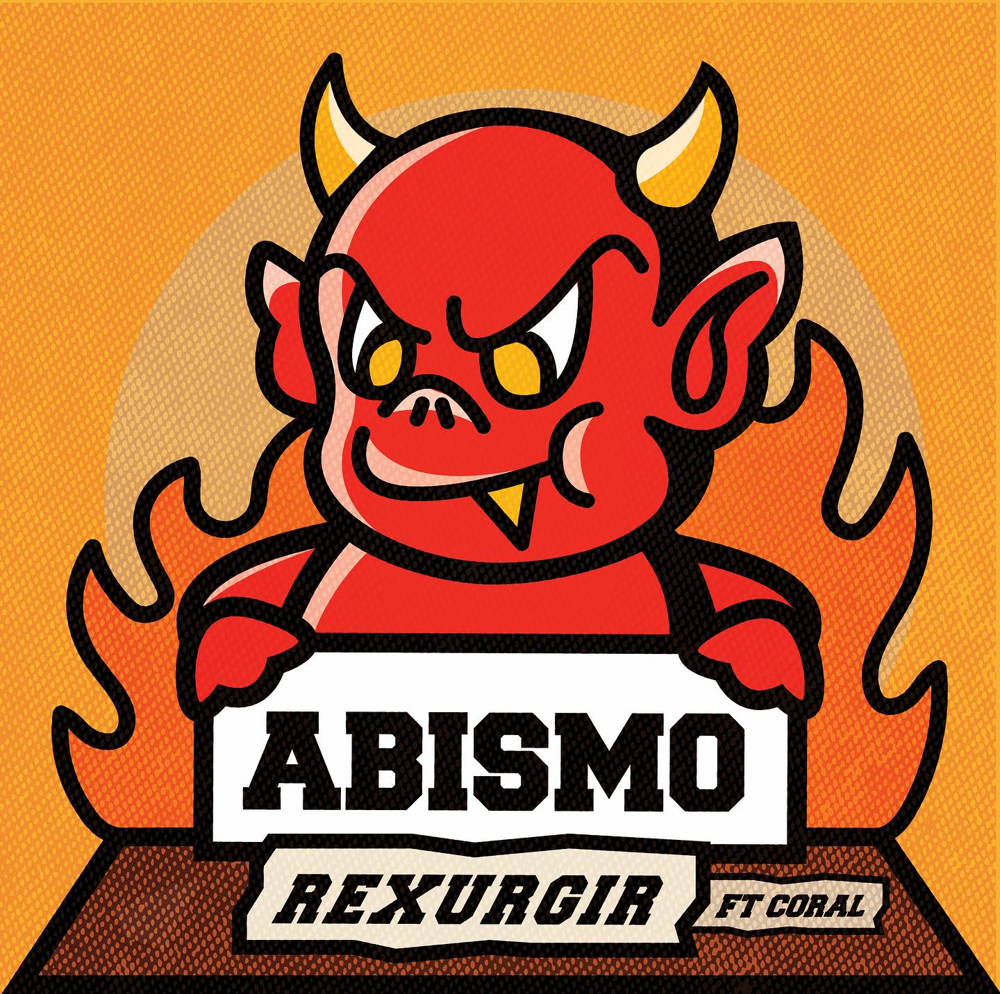
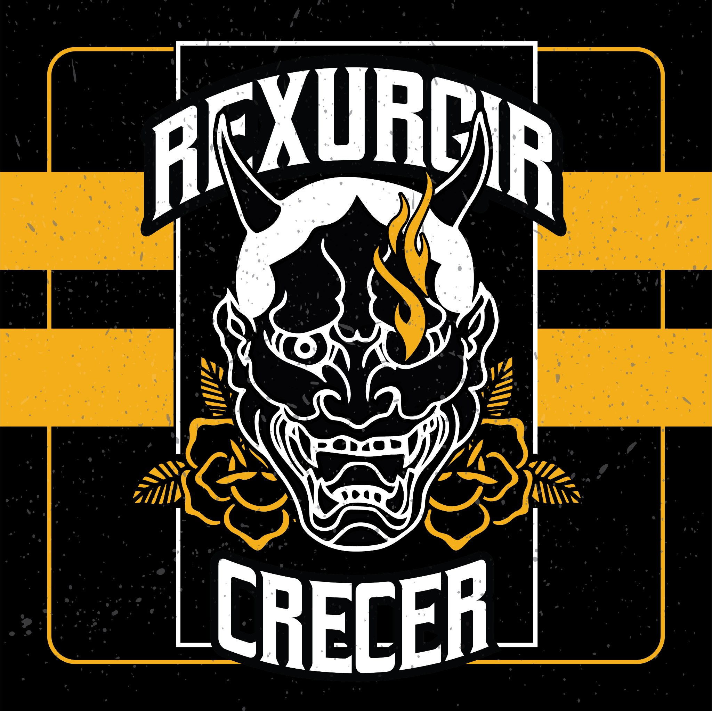
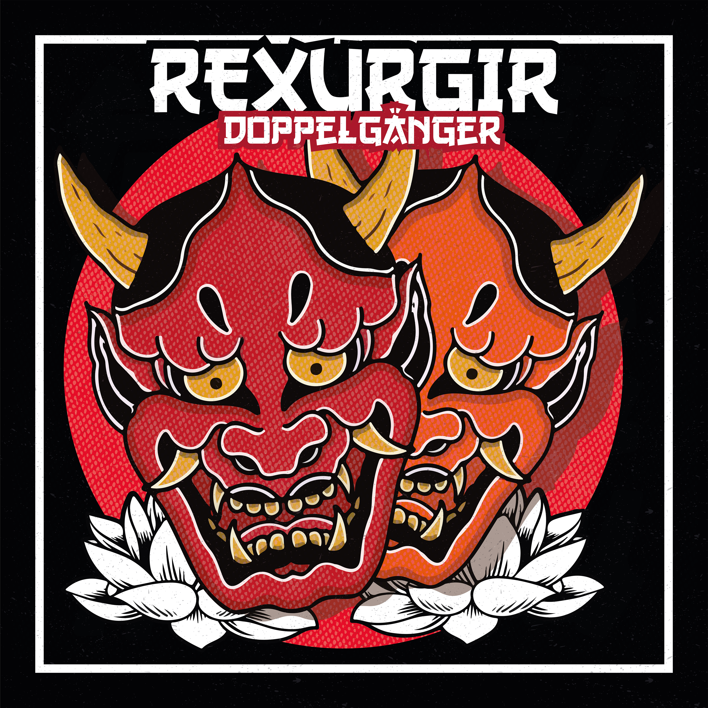
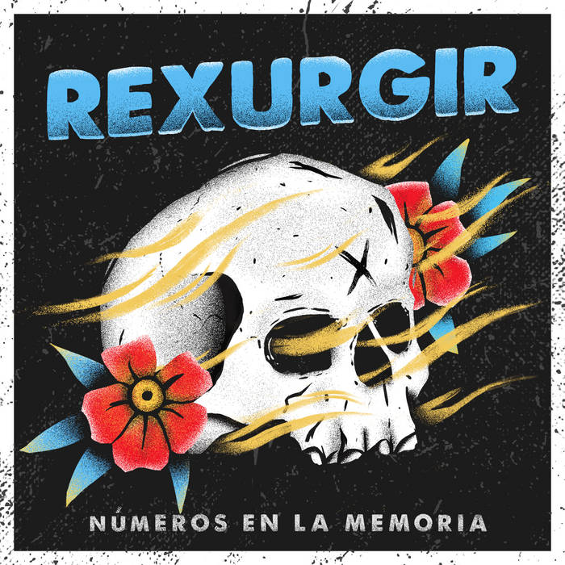

Formada en el año 2019 en los suburbios de Managua, Rexurgir nació de la necesidad de expresar
el descontento con un sistema que no escucha. Influenciados por el punk de los '80, el hardcore
neoyorquino y las escenas locales underground, comenzaron tocando en garajes, centros culturales
y
bares donde podían armar un set rápido y ruidoso.
La banda encontró su identidad en la energía cruda del directo, letras cargadas de rabia y un
sonido
veloz y agresivo. A lo largo de los años, lanzaron dos EPs y un álbum de estudio que los llevó a
girar por varias ciudades del país, siempre fieles a su ética DIY (hazlo tú mismo) y a la
comunidad
que los vio crecer.

Anima

Abismo

Crecer

Doppelgänger
Ciegos • Sin Razón

Números en la memoria